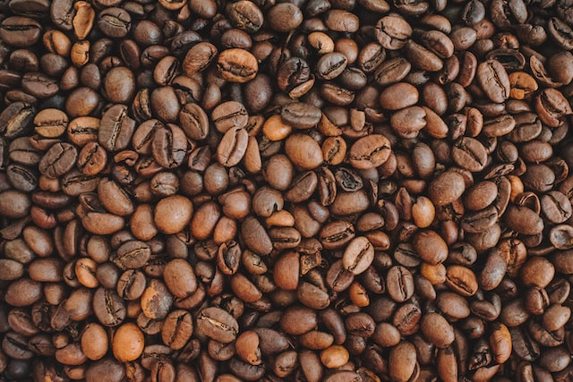
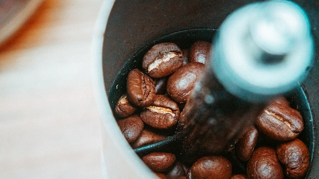
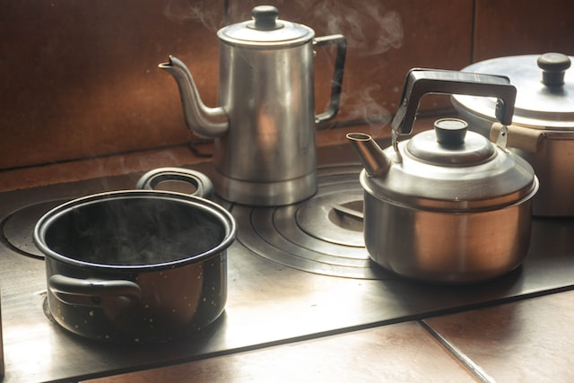
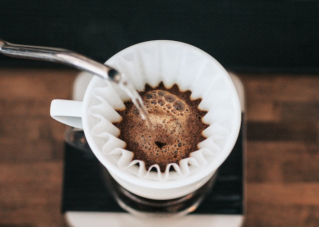

O Café em Grãos Serrana é cultivado nas montanhas da região serrana, onde o solo fértil e o clima perfeito proporcionam um sabor único e inconfundível. Nossos grãos são selecionados com cuidado e torrados à perfeição, preservando todas as suas características e propriedades.
Com o Café em Grãos Serrana, você desfrutará de uma experiência de café inigualável que une sabor, aroma e qualidade. Escolha Serrana e descubra o verdadeiro prazer do café gourmet em cada xícara.
Experimente o sabor rico e intenso do nosso café em grãos, cultivado com dedicação e paixão nas melhores condições possíveis.
Produzido sem o uso de pesticidas ou fertilizantes químicos, nosso café é 100% orgânico, garantindo um produto saudável e sustentável.
Aprecie a experiência de um café de qualidade superior, com aroma e sabor que proporcionam uma verdadeira viagem sensorial.
Selecione os melhores grãos de café Serrana para garantir um sabor e aroma inigualáveis em sua xícara de café.
Utilize um moedor de café para moer os grãos no tamanho adequado para o método de preparo escolhido, como prensa francesa, filtro de papel ou espresso.
Aqueça a água até uma temperatura entre 90°C e 96°C, garantindo a extração ideal dos sabores e aromas do café.
Prepare o café utilizando o método de sua preferência, misturando a água quente com o pó de café moído. Aprecie cada passo do processo e ajuste as variáveis conforme seu paladar.
